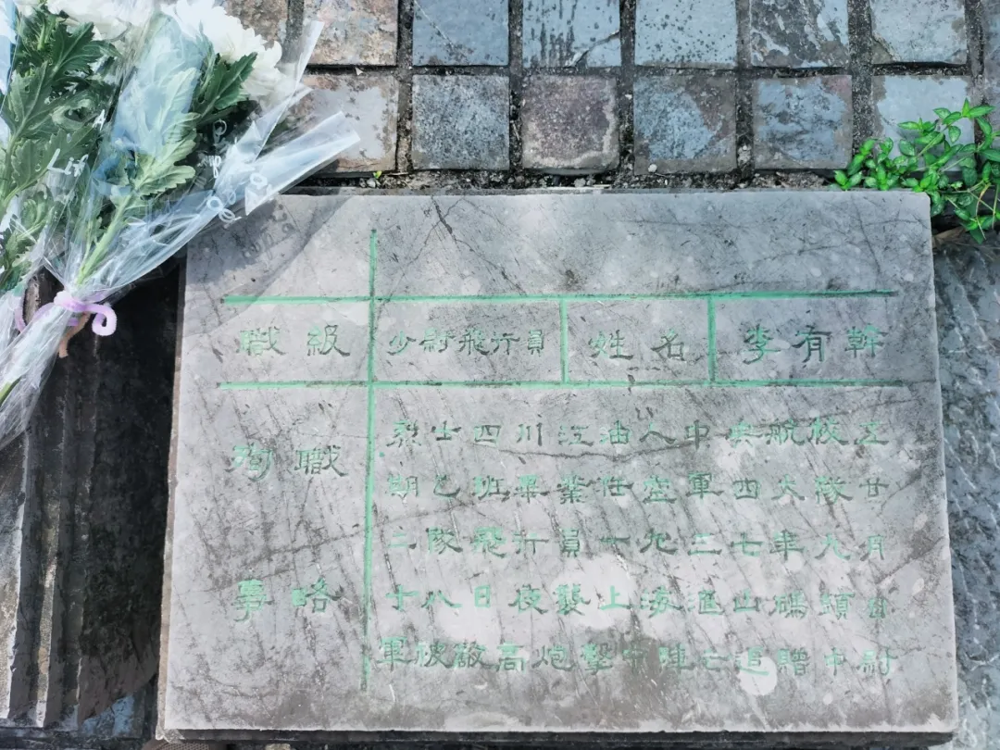
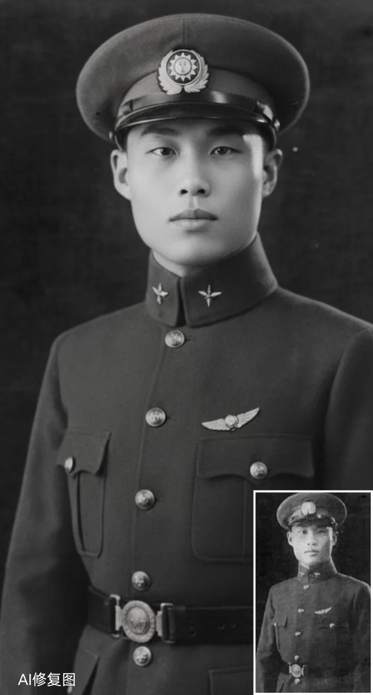
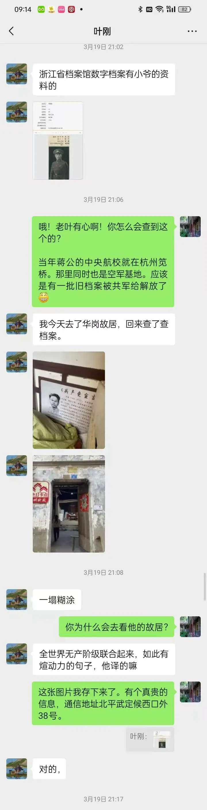
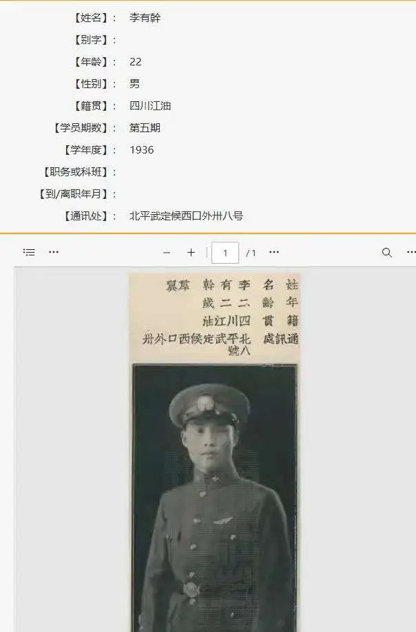
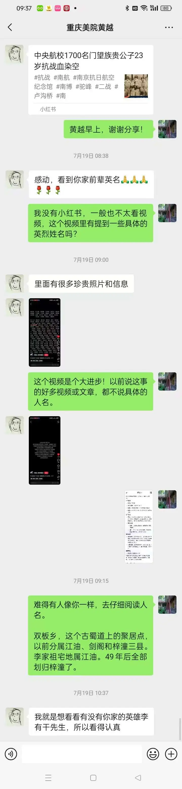
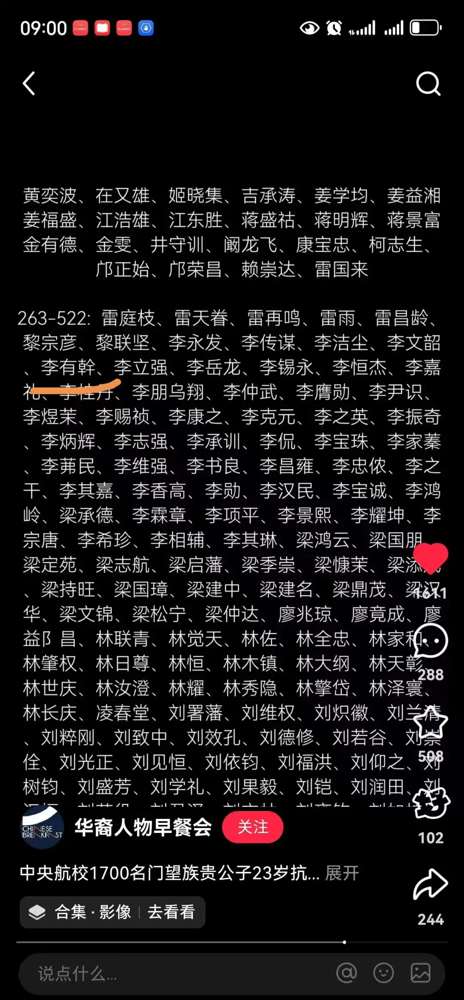
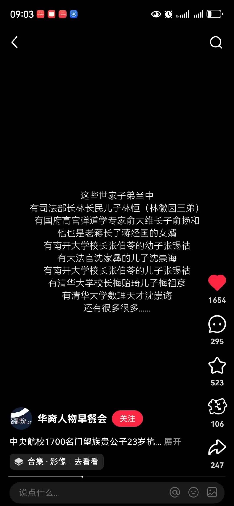
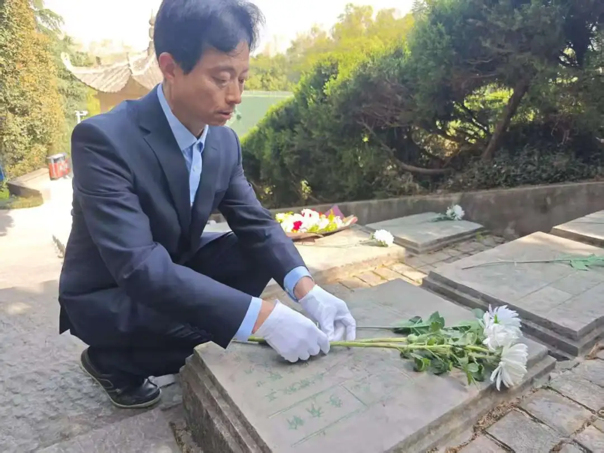
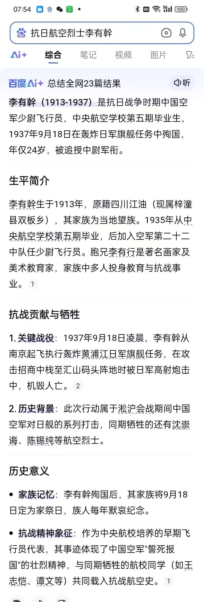

职级：少尉飞行员 姓名：李有幹 殉职事略：烈士四川江油人，中央航校五期乙班毕业，任空军四大队二十二队飞行员，一九三七年九月十八日夜袭上海汇山码头日军，被敌高炮击中阵亡。追赠中尉。
纪念先烈，让他们活在我们心里。纪念先烈，不是为了培养仇恨。对于我们李家的后代而言，纪念先烈李有幹的意义，就在于不要忘记这份家族荣誉，仅此而已。
各位老师大家好！
1937年爆发淞沪会战，李有幹于9月17日夜间至18日临晨，驾机轰炸日军停泊在黄埔江上的旗舰，被高射炮击中，血洒长空，壮烈殉国，时年24岁。

在过去的一年里，有四位朋友和长辈，跟我提到了我们家的先烈李有幹。他们是陈星伟老先生，我爷爷的学生，六十年代毕业于四川美院，著名染织设计师；叶刚，我在浙江多年的好朋友，复原军人；黄越，我在四川美院黄桷坪唐平村的发小，四川美院教授；杨丽丽，南京抗日航空烈士纪念馆的工作人员。





因为我换手机的缘故，丢失了陈星伟陈老先生的微信聊天记录，非常遗憾。
在此，我向四位朋友和老师，表示衷心的感谢！
另外还有其他朋友，间或给我转发过其他纪念抗日航空英烈的公号文章，我也在此一并感谢。
目前，李有幹在二个官方场所里有纪念陈列。一个是台湾忠烈祠。

另一个是南京抗日航空烈士纪念馆，李有幹的陵墓也在此。


今年清明节前，南京纪念馆的杨丽丽女士联系我。

南京抗日航空烈士纪念馆代我们家属为烈士扫墓祭奠。在此，我代表李氏族人，特别感谢杨丽丽女士和纪念馆的其他工作人员和领导们！
在网络中，李有幹的信息也比以前大为丰富。我向中外的几个头部AI语言大模型发出询问："关于中国抗日战争，1937年牺牲的航空烈士李有幹，你知道些什么？"
国内AI的最好答案如下：

国外AI的最好答案如下：
在查询过程中，还意外发现了一个"梓潼人生活网"。他们在两年前发布过一篇《铭记9月3日，追忆梓潼英烈李有幹》
其内容虽然是转载我的过往推文，但我仍然感谢这位作者，感谢他向家乡人民宣传李有幹。
衷心希望在梓潼双板，也建立一个纪念李有幹英烈的场所。让漂泊在外的李氏宗亲后代，早日回归故里，去祭拜先烈。
忌辰在即，李氏族人默哀！